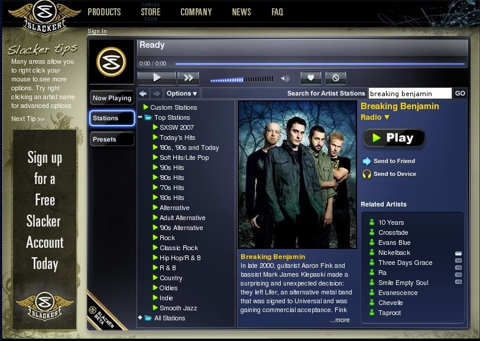

According to this article in the register, last.fm is going to do for music videos, what it does for music audio. Interesting!
Wednesday Mar 14, 2007
Today at SXSW, Slacker will be launched. Slacker is an online radio, similar to Pandora - type in the names of a few artists that you like and Slacker will feed you a continuous stream of music related to those artists. Nothing new here so far, many folks have been doing the same thing for years. The novel thing that Slacker is bringing to the table is that they will let you take Internet Radio on the road.
This summer
Slacker will be releasing an iPod-like device (yes, real hardware) that
will allow you to sync up and take an Internet Radio station on the
road. The device will presumably enforce the same rules that we
have with Internet radio - no playing a song or artist on demand, no
unlimited song skipping. Engadet describes the device as such: Slacker will provide a internet radio network that won't just reach you
via browser, but will also stream to a Slacker portable by way of WiFi
and -- get this -- satellite service. The Slacker player, which will feature a massive 4-inch screen with
scrolling touch strip and debut this summer in varying capacities
between 2, 4, and 8GB up to 120GB for between $150 and $350, will have
track metadata via AMG, and gobbles up and plays back audio content via
WiFi and USB (with tracks purchasable for $1). The satellite part comes
into play with a docking station at home or in the car, so you can get
Slacker content while on the move or if you're out of range of internet
access.
Right now, slacker is in beta, and only the free, web radio is live. The web radio, according to Forbes, will use (gulp!) audio ads (something that Pandora experimented with and very quickly abandoned). The web player is rather slick, and easy to use. However, the music choices it made were rather pedestrian. I'm guessing that they rely on All Music's similar artist data to drive their radio stations, which give serviceable recommendations, but lacks the subtlety and aha! factor of Pandora or last.fm. Right now I am listening to 'The Nice' radio, which should be filled with raucous Hammond B3 and bad vocals, but instead I'm hearing a rather pedestrian selection of the Beatles, Cream and Traffic (yawn!). Pandora, on the other hand, knows that The Nice has a 'electric rock instrumentation with prominent organ' (prominent organ indeed!) and plays similar sounding tracks. Last.fm, with its social recommender offers a track by Renaissance that I've never heard before, but sounds like it could have been recorded by the Nice. Now that's what a good music recommender should do.
Slacker is in beta, and their Big Idea, taking Internet Radio on the road is not ready yet, so we'll cut them some slack ;) - but I hope they learn that the key to good Internet radio is interesting and highly relevant music recommendations.

Social tags and music are a natural fit. People tag songs and
artists with all sorts of interesting tags related to genre, mood,
instrumentation and so on. One of the stranger music tags I've
encountered on last.fm is 'lazy-eye'.
19 different people have applied this tag nearly 200 times. This
tag has been applied to Barry Manilow, Cookie Monster, Momus and
others. I do wonder what the motivation is for someone to tag an
artist as 'lazy eye'. Nevertheless, it does make for some very
eclectic listening. So feel free to have a listen to some lazy-eye
radio:
Tuesday Mar 13, 2007
Last week, The Copyright Royalty Board substantially raised fees for Internet Radio. Today, National Public Radio has announced that they will be filing a petition for reconsideration with the Copyright Royalty Board, asking that online royalties be returned to their previous rates. VP Andi Sporkin says of the recent increases in rates by the CRB:
This is a stunning, damaging decision for public radio and its commitment to music discovery and education, which has been part of our tradition for more than half a century.
We are being required to pay an internet royalty fee that is vastly more expensive than what we pay for over-the-air use of music, although for a fraction of the over-the-air audience.
I applaud NPR's action and hope others will join in the fight. via the Chicago Tribune
 Pandora
is a cool way to discover music - the Pandora radio gives consistent
high quality music that is similar to music that you already know and
like. However, if you like Classical music, you are out of luck
with Pandora - there's no Classical music in the Pandora catalog.
Pandora knows this is a problem for many listeners and is doing
something about it. Last month, Steve Hogan of Pandora posted this
in response to a comment about classical music on the Pandora blog:
Pandora
is a cool way to discover music - the Pandora radio gives consistent
high quality music that is similar to music that you already know and
like. However, if you like Classical music, you are out of luck
with Pandora - there's no Classical music in the Pandora catalog.
Pandora knows this is a problem for many listeners and is doing
something about it. Last month, Steve Hogan of Pandora posted this
in response to a comment about classical music on the Pandora blog:
We do intend to make classical music available through Pandora. We're currently developing a music genome for this purpose and we'll have to populate it with enough music to create a satisfying listening experience. I can tell you there is a lot of enthusiasm within the company to offer classical music to our users - this is a large undertaking but it will be well worth the wait!
The intention to add classical music to Pandora was echoed in the recent Pandora Podcast as well.
I
do hope that they don't segregate Classical music away from all of the
rock/pop and alternative music in Pandora. I'd love to hear a
playlist that segues between a song like Eleanor Rigby and a
Mozart string quartet. And I hope that Pandora manages to roll out
their Classical collection before the RIAA manages to kill online radio.
Monday Mar 12, 2007
There's less than a month before the deadline for paper submissions to ISMIR 2007 (which is to be held in the land of the Waltz). ISMIR is the International Conference on Music Information Retrieval - its where all the cool music technologists hang out these days. What with the ISMIR paper deadline, work on my JavaOne talk and demo, and work on my Sun Lab's open house demo it promises to be a very busy month!
One of the talks at JavaOne that I am most interested in attending is JFugue: Making Music with Java MIDI and illustrating API Usablity being given by Geertjan Wielenga and David Koelle. This talk has Java, Music, API design - what more could you want in a talk?
Sunday Mar 11, 2007
I live in New Hampshire, where we (still) have the
first-in-the-nation Presidential primary. With only a year to go
before the primary, the candidates are starting to arrive in full
force. Yesterday, while I was taking a walk though the town
I saw a hustle and bustle outside of the local chocolate shop. I
recognized Carl Cameron
- Fox news political reporter - something was definitely up.
Asking around I found out that Senator Hillary Clinton was about to make
a 'surprise' visit for some hot chocolate. I waited along with
about 20 reporters (I noticed after a few minutes that I was standing
next to Mara Liasson of NPR). While waiting, I chatted with Chris Fitzgerald, a photographer from CandidatePhotos.com
- a free-lance photo site that sells photos of candiates to all of the
major news organizations. He took some good photos of the
event: Photo of Hillary in New Hampshire
Hillary
finally arrived. She was gracious, she took her time walking through
the crowd, signing autographs, shaking hands, and chatting with people
and even kissing babies. All in all, it was a fun way to
spend an hour watching the out-of-state candidates get mobbed by the
out-of-state press, each trying to find a local New Hampshirite to talk
to (hint - he's the guy wearing the red flannel shirt).
Wednesday Mar 07, 2007
While you are reading blogs, why don't you go and sign a petition to save internet radio and then read more about it at Bill G's Save Our Internet Radio and at SaveTheStreams.org.
Tuesday Mar 06, 2007
Since I have a search engines and a whole lot of song lyrics, I can do some interesting lyric searches. For instance here are the four songs that mention blogging:
- Some by Sea: An Introduction: You Can't Just Walk Away From Someone Who Is Leaning On You
- Eleventyseven: Myspace
- Keane: Wolf at the Door
- mc chris: Ratz
Monday Mar 05, 2007
I writing a little web app using the nifty Google Web Toolkit (it
is a really nice bit of work) when I received a very troubling warning
from the GWT compiler - I was using Java 1.5 language features (in
particular, Generics) while the GWT only supports Java 1.4. This was going to be a real big problem, since I was hooking the web app to the AST Search Engine which
uses Java 1.5 features in its interface. This could be a deal
breaker. But I soldiered on, thinking that if I confined my 1.5
code to the server side (where I was interacting with the search
engine), but kept the client and any Java code that was to be shipped
over a wire in 1.4 things might work - and sure enough it did. So if you
are considering GWT, don't be put off by the Java 1.4 restrictions -
once you are running on the server, you can use 1.5 to your heart's
content.
Sunday Mar 04, 2007
This is a big deal. According to RAIN (The Radio and Internet Newsletter) the Copyright Royalty Board has adopted the 'pay per play' rate proposed by SoundExchange(the digital music royalty collection body created by the RIAA). The royalty fees are so high that they will likely drive most of the Internet radio stations (such as our favorite Radio Paradise) right off the air. Bill Goldsmith, the creator of Radio Paradise says:
For some time, we've suffered with a system where we pay a large chunk (10%-12%) of our income to the Big 5 record companies - while FM stations and radio conglomerates like Clear Channel pay nothing. Now they want even more. In our case, an amount equal to 125% of our income.
This will also likely have a tremendous negative impact on companies like Pandora, that thrive on customized radio streams. The new licensing fees include a per channel cost which may mean that each customized radio stream that Pandora serves may cost them a $500 minimum. That's $500 for each of their many millions of listeners. (UK based last.fm on the other hand, may not be affected by this at all).
An excellent analysis of the
new rates and their impact on a typical Internet broadcaster (along with
some really good commentary) can be found at Save Internet Radio.
Friday Mar 02, 2007
Take a few minutes break from trying to improve your Netflix prize submission and mark your calender for October 19-20 for Recommender Systems 2007, to be held in Minneapolis. This is an ACM-sponsored conference chaired by Joseph Konstan, Barry Smith and John Reidl. Stay tuned for the call for papers.
Over the last few days, I've been looking at building a song lyric similarity model. The idea is to build a system that can find songs that have similar lyrics to a seed song. This is useful, for instance, when you want to generate playlists that have some cohesive theme.
This is a pretty simple idea, but it can be difficult to implement. First, you need a search engine that can efficiently determine document similarity for a large number of documents. Second, you need access to lots and lots of lyrics. Now, I am pretty lucky in that I work with the Advanced Search Technologies folks here in Sun Labs. The AST team has developed an incredible search engine that will let me do all sorts of neat things - document similarity being one of them. With this search engine, I can index the lyrics of each song as a document and then make simple queries to find similar documents. It's fast, it is well architected, and it's written in Java.
 So,
I have a search engine that will do the heavy lifting - but without
lyric data, the search engine would have nothing to do. So where
can I get a whole lot of lyric data? Why LyricWiki
of course! LyricWiki is a wikipedia-style song lyric site, that (unlike
most lyric sites) provides lyrics without a flood of invasive ads.
LyricWiki has a nice clean Wiki-style interface, and they provide a soap
interface to their data. With the soap interface, I could easily
crawl the site to build up a nice database of lyrics. However, it seemed
like it might be a bit anti-social to do that, so I contacted Sean
Colombo, the creator of LyricWiki. I explained to him the kind of thing I
wanted to do, and he graciously offered to give me a dump of his entire
database! What a super thing for him to do!
So,
I have a search engine that will do the heavy lifting - but without
lyric data, the search engine would have nothing to do. So where
can I get a whole lot of lyric data? Why LyricWiki
of course! LyricWiki is a wikipedia-style song lyric site, that (unlike
most lyric sites) provides lyrics without a flood of invasive ads.
LyricWiki has a nice clean Wiki-style interface, and they provide a soap
interface to their data. With the soap interface, I could easily
crawl the site to build up a nice database of lyrics. However, it seemed
like it might be a bit anti-social to do that, so I contacted Sean
Colombo, the creator of LyricWiki. I explained to him the kind of thing I
wanted to do, and he graciously offered to give me a dump of his entire
database! What a super thing for him to do!
So armed with a
world-class search engine and 300,000 (!) song lyrics, I've been able
to build a song lyric similarity engine. It is pretty neat. First
of all, it does a great job of finding song covers (duh!). But it
also works well at generating themed playlists. For example,
I used Led Zeppelin's Gallows Pole as a query. Here's the resulting playlist, filled with songs that will make you swing (in the worst sense of swing).
- Peter, Paul & Mary:Hangman
- Robert Plant: Hey Joe
- Dust for life: The End
- The Walkabouts: Hang_Man
- Smog: Hangman blues
- Bay Laurel: We Lost
- Samael: Worship him
Wednesday Feb 28, 2007
Rumors are afloat that Viacom is in negotiations to purchase last.fm
for $450 million. That's a whole lot of money! Last.fm is
such a super music discovery site, I wish Martin, RJ, Norman and all of
the last.fm crew the best, and I hope they do well - but I really worry
what will happen to last.fm should Viacom take the reins. (via Getcha Info!)
This blog copyright 2010 by plamere